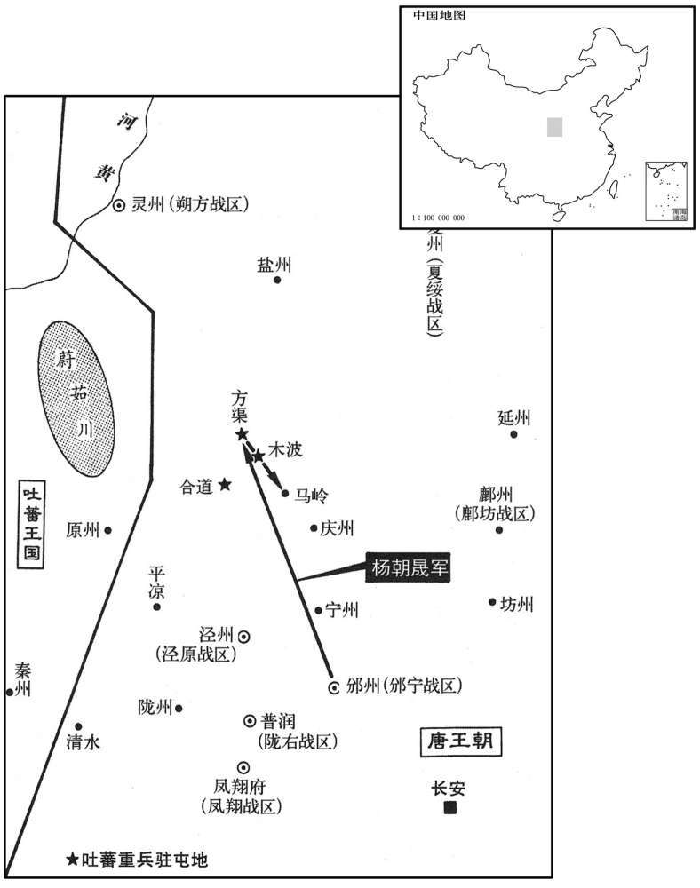

公元797年资治通鉴：本年记事、原文与白话对照
按原书编年位置阅读；追叙和史论不等于本年发生的事件。白话采用所据译本，缺译不以生成译文补齐。
卷235 · 本年记事
公元797年 · 唐德宗神武圣文皇帝贞十三年
十三年〔（丁丑、七九七）〕
本年事件索引（现代整理）
春，正月，壬寅，吐蕃遣使请和亲；上以吐蕃数负约，〔数，所角翻。〕不许。
春季，正月，壬寅（十五日），吐蕃派遣使者请求和好，由于吐蕃屡次背弃和约，德宗不肯答应。
上以方渠、合道、木波皆吐蕃要路，欲城之，〔九域志：环州，治通远县，唐方渠县地，有大波、马岭、石、昌合道四镇。〕使问邠宁节度使杨朝晟：「须几何兵﹖」对曰：「邠宁兵足以城之，不烦他道。」上复使问之曰：「向城盐州，〔城盐州见上卷九年。复扶又翻。〕用兵七万，仅能集事。今三城尤逼虏境，兵当倍之，事更相反，何也﹖」对曰：「城盐州之众，虏皆知之。今发本镇兵，不旬日至塞下，出其不意而城之，虏谓吾众亦不减七万，其众未集，不敢轻来犯我。不过三旬，吾城已毕，留兵戍之，虏虽至，无能为也。〔此后周韦孝宽城汾石之故智也。〕城旁草尽，不能久留，虏退则运刍粮以实之，此万全之策也。若大集诸道兵，踰月始至，虏亦集众而来，与我争战，胜负未可知，何暇筑城哉！」上从之。二月，朝晟分军为三，各筑一城。军吏曰：「方渠无井，不可屯军。」判官孟子周曰：「方渠承平之时，居人成市，无井何以聚人乎！」命浚眢井，〔眢井，废井也。眢，乌欢翻。〕果得甘泉。〔方渠县咸河，从土桥、归德州、同家谷三处发源源来，咸苦不可食。甜河，在城西，从蕃部鼻家族北界来，供人饮食。〕三月，三城成。〔考异曰：实录：「先是，邠宁杨朝晟奏：『方渠、合道、木波皆贼路也，请城其地以备之。』诏问：『须几何人﹖』邠志曰：「十三年春，诏问杨公曰：『方渠、合道、木波皆贼路世，城之可乎﹖若以为可，更要几兵﹖』二月十一日，起复除本官。十四日，制书到军。十八日，发军。二十六日，军次石堂谷。二十八日，功就三城。」今从邠志而不取其日。〕夏，四月，庚申，杨朝晟军还至马岭，〔唐马岭县，属庆州。刘昫曰：马岭，隋县，治天家堡，贞观八年移理新城，以县西有马岭坂。宋白曰：盐州治五原，即汉马岭县地。今州南抵庆州马岭县北界。杜佑：马岭县，汉旧牧地，川形似马领。〕吐蕃始出兵追之，相拒数日而去。朝晟遂城马岭而还，开地三百里，皆如其素。〔皆如其素所虑之期也建中间，朔方兵破李纳军，朝晟为之也，盖其智略诚有足称者。还，从宣翻，又如字。〕
由于方渠、合道、木波都是吐蕃的交通要道，德宗准备在那里筑城，便让人询问宁节度使杨朝晟需要多少兵马，杨朝晟回答说：“宁的兵马足够筑城的了，不必烦劳其他道了。”德宗又让人问他说：“以往修筑盐州城，用了七万兵马，才刚刚能够成就事功。如今方渠、合道、木波三城离吐蕃的疆境更为迫近，需要的人马自当是加倍的了，事情反而相反，这是为什么呢？”杨朝晟回答说：“修筑盐州城的人马，吐蕃完全清楚。现在我们却是征调本镇的兵马，不超过十天，就能赶到边境，出其不意地修筑三城。吐蕃以为我军人数不会少于七万，他们的人众未能集中，便不敢轻易前来侵犯我军。不超过三十天时间，我们将三城修筑完毕，留下兵马戍守在那里，即使吐蕃来了，也没有办法了。待三城旁边的野草被吃光以后，吐蕃便无法久留了。吐蕃撤退以后，我们便运送粮草充实三城，这才是万全之策哩。如果大规模地集结各道兵马，一个多月以后才能赶到，但吐蕃也会集结人众前来，与我们交战争锋，连谁胜谁败都无从知道，哪里还有时间修筑三城呢！”德宗听从了他的建议。二月，杨朝晟将军队为成三部分，各自修筑一座城。军吏说：“方渠没有水井，不能屯驻军队。”判官孟子周说：“在国家太平时，来方渠定居的人形成了街市，如果没有水井，怎么能够使人口聚集在这里呢？”于是，他命令人们疏浚废井，果然得到甘美的井泉。三月，三城修筑成功。夏季，四月，庚申（初五），杨朝晟的军队回到马岭县，吐蕃这才发兵追赶杨朝晟，与杨朝晟对抗了好几天，才撤兵离去。于是，杨朝晟修筑马岭城后率军返回，开辟土地三百里，事情完全像他预先所说的那样。

庚午，义成节度使李复薨。庚辰，以陕虢观察使姚南仲为义成节度使。监军薛盈珍方大会，闻之，言曰：「姚大夫书生，岂将才也！」〔将，即亮翻。〕判官卢坦私谓人曰：「姚大夫外虽柔，中甚刚，监军侵之，必不受。军府之祸，自此始矣，吾恐为所留。」遂自他道潜去。南仲果以牒请之，不遇，得免。既而盈珍与南仲有隙，幕府多以罪贬，有死者。〔事见后十六年。史言卢坦庶乎见几。〕
庚午（十五日），义成节度使李复去世。庚辰（二十五日），德宗任命陕虢观察使姚南仲为义成节度使。监军薛盈珍正在聚众议事，听说此事以后便说：“姚大夫是一个读书人，哪能算是将才呢！”判官卢坦私下对人说：“虽然姚大夫表面上是柔弱的。但骨子里却是很刚强的。如果监军侵犯他，他肯定不能接受，军府的祸患，从此便要开始了，我担心的是会被他留下来。”于是他由别的路径暗中离去。姚南仲果然发了公文请他，由于没有遇到，他才得以不受征召。不久，薛盈珍与姚南仲结下嫌隙，幕府人员多半因罪受到贬黜，有的人便因此而死去了。
吐蕃赞普乞立赞卒，子足之煎立。
吐蕃赞普乞立赞去世，他的儿子足之煎即位。
六月，壬午，韦皋奏吐蕃入寇，巂州刺史曹高仕破之于台登城下。〔台登，汉县，唐属巂州，由清溪关西南至台登五百五十里。〕
六月，壬午（二十八日），韦皋奏称吐蕃前来侵犯，州刺史曹高仕在台登城下打败了他们。
光禄少卿同正张茂宗，〔员外置同正员，起于高宗之时。〕茂昭之弟也，〔茂昭时为义武节度使。〕许尚义章公主；〔义章公主，上女也。义章，县名，属郴州。宋白曰：汉郴县地，隋末萧铣分郴县立。〕未成婚，茂宗母卒，遗表请终嘉礼，上许之。秋，八月，癸酉，起复茂宗左卫将军同正。左拾遗义兴蒋又上疏谏，〔考异曰：实录作「蒋武」，按旧传又本名武。〕以为：「兵革之急，古有墨衰从事者，〔衰，仓回翻。左传：晋文卒，未葬，秦穆公伐郑，晋襄公墨衰绖以败秦师于殽。〕未闻驸马起复尚主也。」上遣中使谕之，不止，乃特召对于延英，〔唐中世以后，召对宰辅，乃开延英，今蒋又特以拾遗召对。〕谓曰：「人间多借吉成婚者，卿何执此之坚﹖」对曰：「婚姻、丧纪，人之大伦，吉凶不可渎也。委巷之家，不知礼教，〔委巷，曲巷也，言其屈曲僻陋。〕其女孤贫无恃，〔无贫而丧其亲也。〕或有借吉从人，未闻男子借吉婜妇者也。」太常博士韦彤、裴堪复上疏谏；〔复，扶又翻。〕上不悦，命趣下嫁之期，〔趣，读曰促。〕辛巳，成婚。
光禄少卿同正张茂宗，是张茂昭的弟弟，已定下与义章公主婚配，但在没有成婚以前，张茂宗的母亲去世了。她在死前留下表章请求让儿子完成婚礼，德宗答应了她的要求。秋季，八月，癸酉（二十日），在服丧未满的情况下，德宗起用张茂宗为左卫将军同正。左拾遗义兴人蒋上疏规劝，认为：“在战事急迫时，古时候曾有过身穿黑色麻布丧服便处理事务的先例，但是没有听说过在丧服未满之前就起用驸马迎娶公主的事情。”德宗派遣中使开导他，他仍然不肯停止议论，于是德宗特别召他到延英殿谈话，对他说：“民间往往有在服丧期间完婚的事例，你为什么如此顽固地坚持反对呢？“蒋回答说：“婚姻与丧事，是人们的根本性的伦理，对于吉凶是不可轻慢的。陋巷中的人家，不懂得礼仪教化，那些幼年丧亲人、贫困无依的女子，或许有人在服丧期内嫁人，没听说过男子在服丧期内娶妻的事情。”太常博士韦彤、裴堪又上疏进谏，德宗心中不快，让人催促赶紧定下公主下嫁的日期，辛巳（二十八日），张茂宗与义章公主完婚。
九月，己丑，中书侍郎、同平章事卢迈以病罢为太子宾客。
九月，己丑（初七），中书侍郎、同平章事卢迈因病被罢黜为太子宾客。
冬，十月，淮西节度使吴少诚擅开刀沟入汝，〔刀沟，新、旧书皆作司洧水。〕上遣中使谕止之，不从。命兵部郎中卢群往诘之，〔诘，去吉翻。〕少诚曰：「开此水，大利于人。」群曰：「君令臣行，虽利，人臣敢专乎！公承天子之令而不从，何以使下吏从公之令乎！」少诚遽为之罢役。〔为，于伪翻。史言杖大义者，犷悍不能不为之革面。〕
冬季，十月，淮西节度使吴少诚擅自开通刀沟，引入汝水，德宗派遣中使宣旨制止他，他不肯听从。德宗命令兵部郎中卢群前去责问他，吴少诚说：“开通这一河流，对百姓非常有利。”卢群说：“君主下令，臣下行令。即使开河有利，做臣下的便敢专断了吗！你接到天子的命令却不肯听从，又怎么能够让下边的官吏听从你的命令呢？”于是吴少诚连忙将开河之役停止下来了。
十二月，徐州节度使张建封入朝。先是，宫中市外间物，令官吏主之，随给其直。〔先，悉荐翻。〕比岁以宦者为使，〔比，毗至翻，近也。〕谓之宫市，抑买人物，稍不如本估。〔估者，价也。〕其后不复行文书，〔复，扶又翻；下同。〕置白望数百人于两市〔白望者，言使人于市中左右望，白取其物，不还本价也。两市，长安城中东市、西市也。隋名东市曰都会，西市曰利人。〕及要闹坊曲，阅人所卖物，但称宫市，则敛手付与，真伪不复可辩，无敢问所从来殳论价之高下者，率用直百钱物买人直数千物，多以红紫染故衣、败缯，〔缯，慈陵翻。〕尺寸裂而给之，仍索进奉门户及脚价钱。〔索，山客翻。进奉门户者，言进奉所经由门户，皆有费用，如汉灵帝时所谓导行费也。脚价，谓僦人负荷进奉物入内，有雇脚之费。〕人将物诣市，〔将，赍持也。〕至有空手而归者，名为宫市，其实夺之。商贾有良货，皆深匿之；〔贾，音古。〕每敕使出，虽沽浆、卖饼者皆撤业闭门。尝有农夫以驴负柴，宦者称宫市取之，与绢数尺，又就索门户，〔索，山客翻。〕仍邀驴送柴至内。农夫啼泣，以所得绢与之；不肯受，曰，「须得尔驴。」〔须者，意所欲也。〕农夫曰：「我有父母妻子，待此然后食。〔言待此驴负物贸易，然后可以给食。〕今以柴与汝，不取直而归，汝尚不肯，我有死而已。」遂殴宦者。街吏擒以闻，〔殴，乌口翻。街吏，即金吾左右街使之属吏。〕诏黜宦者，赐农夫绢十匹。然宫市亦不为之改，谏官御史数谏，不听。〔为，于伪翻。数，所角翻。〕建封入朝，具奏之，上颇嘉纳；以问户部侍郎判度支苏弁，弁希宦者意，对曰：「京师游手万家，无土著生业，〔着，直略翻。〕仰宫市取给。」〔仰，牛向翻。〕上信之，故凡言宫市者皆不听。
十二月，徐州节度使张建封入京朝见。在此之前，宫廷中购买外面的物品，命令官吏主持其事，随时付给购物的价钱。近年以来，任命宦官为使者，称作宫市，低价购买人们的物品，逐渐与本来的价值不相符合了。在此以后，不再行使文书，宦官在长安东、西两市以及地当要冲、繁华热闹的城坊曲巷安排了好几百个四处张望，白白取人物品的人们，被称作“白望”。“白望”到处察看人们出卖的物品，只要自称是宫市，人们便只好把物品拱手交付给他们。人们不再能够分辨真假，也没有人敢询问他们的由来和讲论价钱的高低。他们一般是用价值一百钱的物品换取人们价值好几千钱的物品，经常用染上红色、紫色的陈旧的衣服和变坏的丝帛，按照尺寸撕下来付给卖主，还要勒索所谓进奉门户钱和脚价钱。人们带着物品到市场上去，甚至有空着手回家的人。他们名义上叫做宫市，实际上却是向人夺取。如果商人有上好的货物，便都暗中隐藏起来。每当宫廷使者出来时，即使是卖汤水面饼的人家，也都停止营业，关闭门户。曾经有一个农夫，用驴驮着木柴来卖，宦官自称宫市，拿走他的木柴，给了他几尺绢，又就地索取进奉门户钱，还要求用驴将木柴送到内廷去。农夫哭了，把得到的绢又给了宦官，宦官不肯接受，说：“必须得到你的这匹驴才行。”农夫说：“我家有父母、妻子、儿女，要靠它嫌钱糊口。现在我把木柴给了你，不向你要价钱就往回走了，而你还是不肯放我，我也只有和你拼了！”于是农夫殴打了宦官，街使的属吏捉住他上报，德宗颁诏将宦官废免，赐给农夫十匹绢。然而，宫市并不因此而改变，谏官与御史们屡次规谏，德宗都不肯听从。张建封入朝以后，将宫市的事情条陈奏上，德宗很是嘉许他，也想采纳他的意见。德宗又就此事询问户部侍郎、判度支苏弁的意见，苏弁迎合宦官的意旨，便回答说：“京城中空手闲荡的人们有万家之多，都没有一定的住所和职业，就靠着宫市获取供给。”德宗相信了他的话，所以对所有指责宫市的话，全听不进去了。